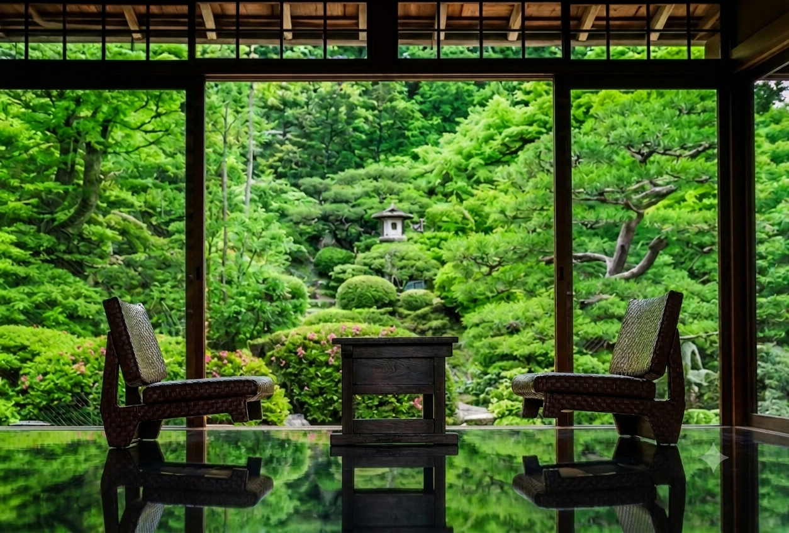
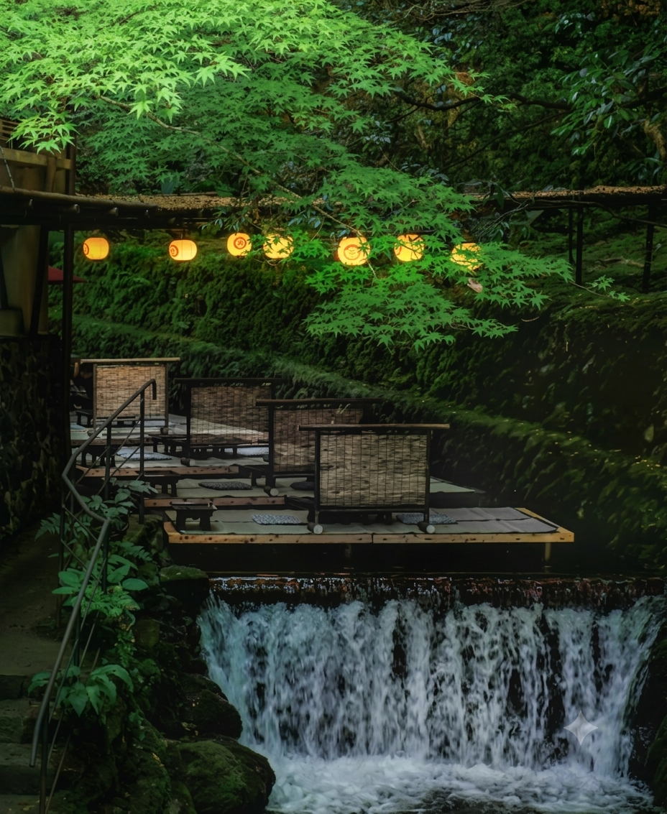
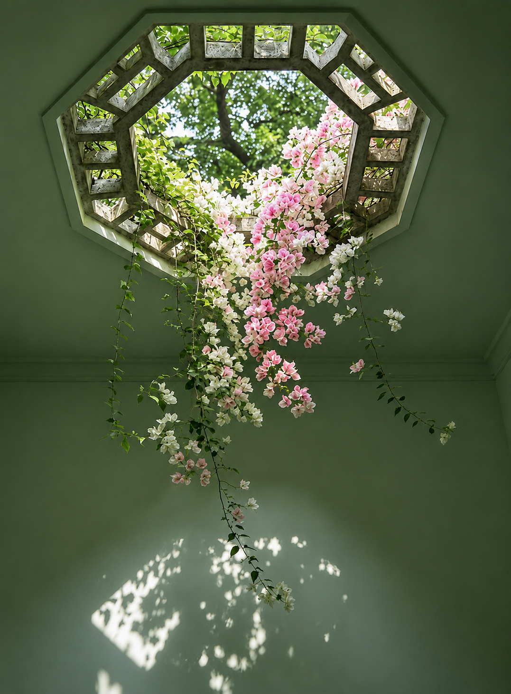
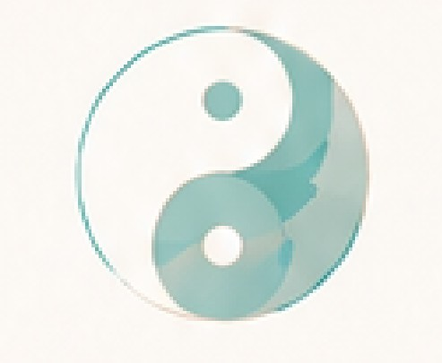
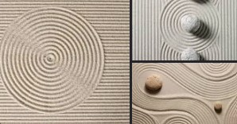
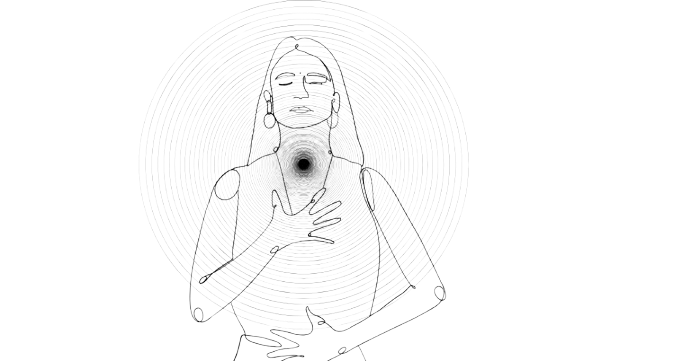
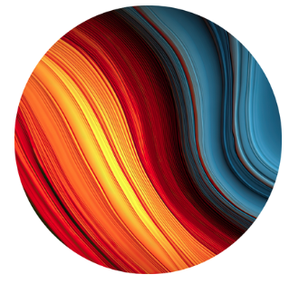

Bi-nō (美脳) is an old idea, quietly modernized: a mind clear enough to reflect the world instead of arguing with it.
実際に、そこにあるものを見る。
美脳とは、静かに現代化された古い知恵——世界と言い争うのではなく、そのまま映し出せるほど澄んだ心のこと。
Bonnō is usually translated as "worldly desire" or "affliction," but it's simpler than that: it's the small, constant gap between what's happening and what you assume is happening.
An ambiguous message. A quiet room. A pause in a conversation. The moment is neutral — but a busy mind can't leave it neutral for long. It reaches for the nearest old memory and calls that the truth.
"You stop reacting to the person in front of you, and start reacting to the version of them stored in your memory."
None of the seven drivers below are flaws. They're just how a mind stays alive. The problem starts when they never stop firing.
仏教には、忙しい心を表す言葉がある。煩悩、ボンノウ。
煩悩は「世俗の欲望」や「わずらい」と訳されることが多いですが、実はもっとシンプルです。今起きていることと、自分がそう思い込んでいることとの、小さくて絶え間ないズレのこと。
意味の取りづらいメッセージ。静まり返った部屋。会話の間（ま）。その瞬間自体はニュートラルです——けれど忙しい心は、それを長くニュートラルなままにしておけません。すぐそばにある古い記憶に手を伸ばし、それを真実だと呼んでしまうのです。
目の前の相手ではなく、自分の記憶の中に保存された「その人のバージョン」に反応し始める。
以下の7つのドライバーは、どれも欠点ではありません。心が生きている証にすぎない。問題が始まるのは、それが止まらなくなったときです。
Still water mirrors a garden with almost no loss. Disturbed water shows you a rough, moving guess of the same garden. Bonnō is what disturbs the water. Bi-nō is what settles it back down.
Bi-nō isn't the absence of bonnō. It's how often you notice the ripple — and wait for it to settle before you decide what you saw.
庭は動かない。何が見えるかを決めるのは、水だけ。
静かな水は、庭をほとんど損なうことなく映し出します。乱れた水は、同じ庭の、粗く揺れ動く推測を見せるだけ。煩悩とは水を乱すもの。美脳とは、それを再び静めるものです。
波立つ心：あいまいな瞬間 → 古い記憶が先に答える → また同じ反応
静かな心：あいまいな瞬間 → 一瞬の間（ま） → 選び取った反応
美脳とは、煩悩がない状態のことではありません。波紋にどれだけ気づけるか——そして、それが静まるのを待ってから、自分が見たものを決められるかということです。
"Kintsugi doesn't hide the break. It draws a gold line through it."
Wabi-sabi is the older idea underneath bi-nō: beauty isn't found despite wear, asymmetry, and repair — it's found because of them. A bowl mended with gold lacquer isn't worth less than an unbroken one. Its crack is now part of what makes it worth keeping.
Bi-nō borrows the same posture toward a disturbed mind. The goal was never water that's never touched. It's noticing the crack, mending it in plain sight, and using the bowl again — a little more honestly than before.
金継ぎは、割れを隠しません。そこに金の線を引くのです。
侘寂（わびさび）は、美脳の土台にあるさらに古い考え方です。美しさは、摩耗や非対称、修復があるにもかかわらず存在するのではなく、それらがあるからこそ存在する。金の漆で継がれた器は、割れていない器より価値が低いわけではありません。そのひびこそが、今、その器を持ち続ける理由の一部になっています。
美脳は、乱れた心に対しても同じ姿勢を借りています。目指すのは、一度も揺らがない水ではありません。ひびに気づき、それを隠さずに継ぎ、その器をまた使うこと——以前より少しだけ正直に。
Japanese gardens have a design principle called 借景, shakkei — "borrowed scenery." A distant mountain, a shrine gate, a neighbor's tree line: none of it belongs to the garden. It's simply framed so well that it reads as part of the whole.
But borrowing scenery isn't automatic — it takes a discipline. Only when you understand what lies behind the view, and bring your own posture into line with what it calls for, does harmony actually appear. It's the difference between assuming you're simply seeing what's there — 素朴実在論, naive realism — and practicing a way of being, 在り方, that lets you see it at all.

Bi-nō works the same way. It doesn't manufacture calm from nothing — it borrows what was already there: a pause that existed before you noticed it, a clarity the room already had. The practice is just learning where to stand so it comes into frame.
その山は、もともとあなたのものではなかった。庭はただ、それをどう額装するかを知っていただけ。
日本庭園には「借景（しゃっけい）」と呼ばれる設計の原則があります——直訳すれば「借りた景色」。遠くの山、神社の鳥居、隣家の木立。そのどれも、庭そのものの所有物ではありません。ただ、あまりにも巧みに額装されているため、全体の一部のように見えるのです。
景色を借りるには、流儀がいる。
そこにある景色を、ただそのまま拝借するのではありません。その背景への理解と、そこにふさわしいあり方へ自分の基準を合わせられること——そこで初めて「調和」が生まれます。
これは、「素朴実在論」と「在り方」の違いでもあります。
美脳も同じように働きます。何もないところから静けさを作り出すのではなく、すでにそこにあったものを借りるのです——気づく前から存在していた間（ま）、その部屋がすでに持っていた透明さ。実践とは、ただそれが額の中に収まる場所に立つことを学ぶことです。
When the water's already disturbed, these are the places to stand while it settles.
Somatic — reading the body before the story arrives
Emotional focus — naming what you feel, precisely
Efficacy — trusting your ability to act on it
Scotoma — the blind spot you didn't know was there
Chaos theory — change rarely arrives in a straight line

もう一度、足場を見つけるための5つの方法。
水がすでに乱れているとき、それが静まるまでの間、立っていられる場所です。
Before a moment ever reaches judgment, it's already passed through these six filters.

どこから
物事を見るか
何と何をつなげて
認識するか
どんな世界を
前提としているか
人との
境界線
エネルギーの
使い方
エネルギーの
流れ
あなたが「現実」と呼ぶものを形づくる、6つのレンズ。
ある瞬間が判断に至るまでに、それはすでにこの6つのフィルターを通過しています。
視座 was the first of the six lenses back in 06 — where you look from. It turns out to be more than one lens among six. It's the framework the other five sit inside, and it has a mechanism: 調身・調息・調心 — posture, then breath, then mind.
You don't calm the mind directly. You arrange the body, let the breath follow, and the mind settles last, almost on its own. Where it settles has a name: ゼロポジション, zero position — the ground 視座 returns you to before the next view even forms.

Two of the five anchors from before — 身体知 and 感情 — turn out to have a tradition and a body of research behind them.
レンズの一つではない。6つ全ての下にある枠組み。
06で最初に出てきた視座——それはレンズの1つではなく、他の5つが収まる枠組みそのものでした。そしてそれには仕組みがある。調身・調息・調心。心を直接鎮めるのではない。まず身体を整え、呼吸に任せ、心は最後に、ほとんど自然に静まっていく。
その静まった場所には名前がある。ゼロポジション——次の視座がまだ形になる前に、視座が立ち返る場所。
先に出てきた5つの足場のうち、身体知と感情の2つには、実は伝統と研究の裏付けがある。

Bi-nō grows out of a Japanese framework called 縁起とフラクタル — "origin and fractal" — on why the same relationship patterns keep repeating until someone names them. The full story is on note.
この映し出しの背後にある哲学。
美脳は、日本発のフレームワーク「縁起とフラクタル」から生まれています——同じ関係のパターンが、誰かがそれに名前をつけるまで繰り返され続ける理由についての枠組みです。全体の話はnoteで。
